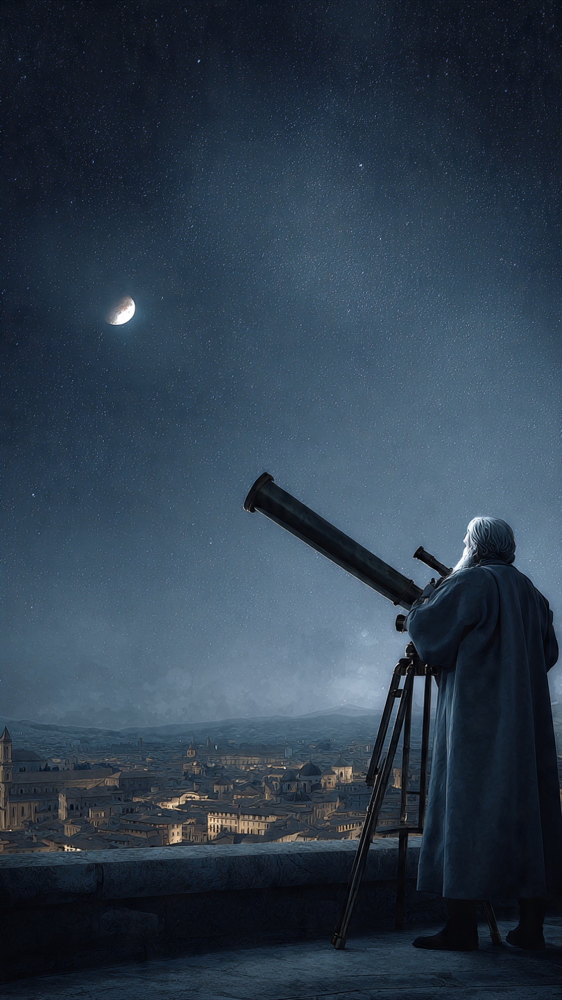

```html
الاختراع الذي جعل الإنسان يرى النجوم كما لم يرها أحد من قبل | اكتشافات وعلوم
```
منذ آلاف السنين، كان الإنسان ينظر إلى السماء في كل ليلة.
يرى النجوم تلمع بعيدًا.
ويرى القمر يتغير شكله مع مرور الأيام.
لكن مهما حاول...
بقي الكون مكانًا بعيدًا وغامضًا.
فالعين البشرية لها حدود.
والأشياء البعيدة جدًا تبقى مجرد نقاط صغيرة في الظلام.
كان الناس يعتقدون أن السماء كرة ضخمة تحيط بالأرض، وأن النجوم والكواكب تتحرك بطريقة لا يمكن للبشر فهمها بالكامل.
لكن كل شيء تغير بسبب اختراع صغير مصنوع من الزجاج.
اختراع لم يكن هدفه في البداية دراسة الكون.
بل كان مجرد أداة تساعد الناس على رؤية الأشياء البعيدة على الأرض.
في بداية القرن السابع عشر، كان صانعو العدسات في أوروبا يعملون على تحسين أدوات الرؤية.
وكان أحدهم، في هولندا، قد صنع جهازًا يجعل الأشياء البعيدة تبدو أقرب.
انتشرت أخبار هذا الجهاز بسرعة.
وعندما وصلت الفكرة إلى إيطاليا، سمع بها عالم شاب اسمه غاليليو غاليلي.
لكن غاليليو لم يكتفِ بما صنعه الآخرون.
بل قرر أن يصنع جهازًا أفضل بنفسه.
كان غاليليو عالمًا يحب التجربة والملاحظة.
لم يكن يصدق الأفكار القديمة لمجرد أن الجميع يؤمن بها.
كان يقول إن الطبيعة يجب أن تُدرس بالنظر والقياس، وليس فقط بالاعتماد على الكتب القديمة.
ولهذا أخذ العدسات الزجاجية وبدأ يطحنها ويصقلها حتى صنع تلسكوبًا أقوى من الموجود في ذلك الوقت.
في البداية، استخدمه لرؤية الأشياء البعيدة على الأرض.
ثم خطرت له فكرة غريبة.
ماذا لو وجّه هذا الجهاز نحو السماء؟
ماذا لو كانت هناك أشياء لا تستطيع العين رؤيتها؟
في إحدى الليالي، حمل غاليليو تلسكوبه ووجّهه نحو القمر.
ولم يكن يعلم أن تلك اللحظة ستغير تاريخ البشرية إلى الأبد.
ما ظهر أمام عينيه لم يكن القمر المثالي الناعم الذي وصفه كثير من العلماء.
بل رأى سطحًا مليئًا بالجبال والحفر.
وكأن القمر عالم حقيقي يشبه الأرض أكثر مما تخيل الجميع.
لكن هذا كان مجرد أول اكتشاف...
ففي الليالي التالية، اكتشف غاليليو أشياء أكثر غرابة بكثير.
📷 الصورة رقم 1
بعد اكتشاف سطح القمر، لم يتوقف غاليليو عن توجيه تلسكوبه نحو السماء.
كان يشعر أن الكون يخفي أسرارًا أكثر مما تخيله الإنسان.
وفي إحدى الليالي من عام 1610، وجّه التلسكوب نحو كوكب المشتري.
في البداية، رأى نقطة لامعة بجانب الكوكب.
ثم لاحظ شيئًا غريبًا.
في الليلة التالية، لم تكن النقطة في المكان نفسه.
ظن غاليليو في البداية أن هناك خطأ في حساباته.
فأعاد المراقبة مرة أخرى.
ثم مرة أخرى.
واكتشف أن هناك أربع نقاط صغيرة تتحرك حول المشتري.
لم تكن نجومًا كما اعتقد.
بل كانت أجسامًا تدور حول كوكب آخر.
أطلق عليها لاحقًا اسم أقمار غاليليو.
كان هذا الاكتشاف صدمة كبيرة في ذلك الوقت.
فالكثير من العلماء كانوا يعتقدون أن كل شيء في السماء يدور حول الأرض.
لكن وجود أقمار تدور حول المشتري أثبت أن هناك مراكز أخرى للحركة في الكون.
ولم تعد الأرض تبدو كما كانت في نظر البشر.
واصل غاليليو مراقبته للسماء.
فاكتشف أن كوكب الزهرة يمر بمراحل مختلفة مثل القمر.
وهذا كان دليلًا قويًا على أنه يدور حول الشمس وليس حول الأرض كما كان يعتقد البعض.
كما لاحظ بقعًا داكنة على سطح الشمس، مما أثبت أن حتى الشمس ليست جسمًا مثاليًا لا يتغير.
كانت هذه الاكتشافات تهز الأفكار السائدة في ذلك العصر.
فالعلم القديم كان يعتمد كثيرًا على ما تم تناقله عبر مئات السنين.
أما غاليليو فكان يقول:
"انظروا إلى الطبيعة بأنفسكم."
فالتلسكوب لم يكن مجرد جهاز لرؤية الأشياء البعيدة...
بل أصبح أداة لاختبار حقيقة الكون.
لكن اكتشافاته لم تمر بسهولة.
فبعض الناس لم يعجبهم ما قاله.
وكان هناك صراع كبير بين الأفكار الجديدة والمعتقدات القديمة.
وأصبح غاليليو أمام مواجهة ستحدد مستقبله.
📷 الصورة رقم 2

بعد أن انتشرت اكتشافات غاليليو، أصبح اسمه معروفًا في جميع أنحاء أوروبا.
فقد أثبت التلسكوب أن السماء ليست كما كان البشر يتخيلون.
القمر ليس كرة مثالية.
والشمس ليست ثابتة بلا تغير.
وهناك أجسام تدور حول كواكب أخرى.
وكانت هذه الأفكار تغيّر فهم الإنسان لمكانه في الكون.
لكن الأفكار الجديدة لم تكن مقبولة عند الجميع.
ففي ذلك الزمن، كانت بعض النظريات القديمة قوية جدًا، وكان أي شخص يخالفها يواجه انتقادات شديدة.
دخل غاليليو في نقاشات طويلة مع علماء وفلاسفة، لأنه كان يصر على أن الملاحظات والتجارب يجب أن تكون أساس فهم الطبيعة.
ورغم الصعوبات التي واجهها، استمر تأثير أعماله.
فقد أثبت أن استخدام الأدوات العلمية يمكن أن يفتح أبوابًا لم تكن ممكنة بالعقل وحده.
فالعين البشرية ترى جزءًا صغيرًا فقط من الحقيقة، لكن الأدوات التي نصنعها توسع قدرتنا على الاكتشاف.
بعد غاليليو، تطورت التلسكوبات بشكل هائل.
أصبحت أكبر وأكثر دقة.
واستطاع العلماء اكتشاف كواكب بعيدة، ومجرات لا تُحصى، ونجوم تولد وتموت في أعماق الفضاء.
ثم ظهرت تلسكوبات فضائية تدور خارج الغلاف الجوي للأرض، فتلتقط صورًا لمناطق لم يرها الإنسان من قبل.
واليوم، عندما ينظر العلماء إلى الكون باستخدام أحدث المراصد، فإنهم يسيرون على الطريق الذي بدأه رجل حمل تلسكوبًا صغيرًا وقرر أن ينظر إلى السماء بنفسه.
لم يكن اختراعه مجرد قطعة من الزجاج والمعدن.
بل كان مفتاحًا فتح بابًا إلى عالم أكبر بكثير من خيال البشر.
وهكذا...
بدأت القصة بجهاز بسيط صُنع لرؤية الأشياء البعيدة.
لكن عندما وُجّه نحو النجوم، غيّر طريقة تفكير الإنسان إلى الأبد.
فبفضل التلسكوب عرفنا أن الأرض ليست مركز كل شيء، وأن الكون أوسع وأعظم مما كنا نتخيل.
وما زال الإنسان حتى اليوم يرفع عينيه إلى السماء...
باحثًا عن أسرار جديدة تنتظر من يكتشفها.